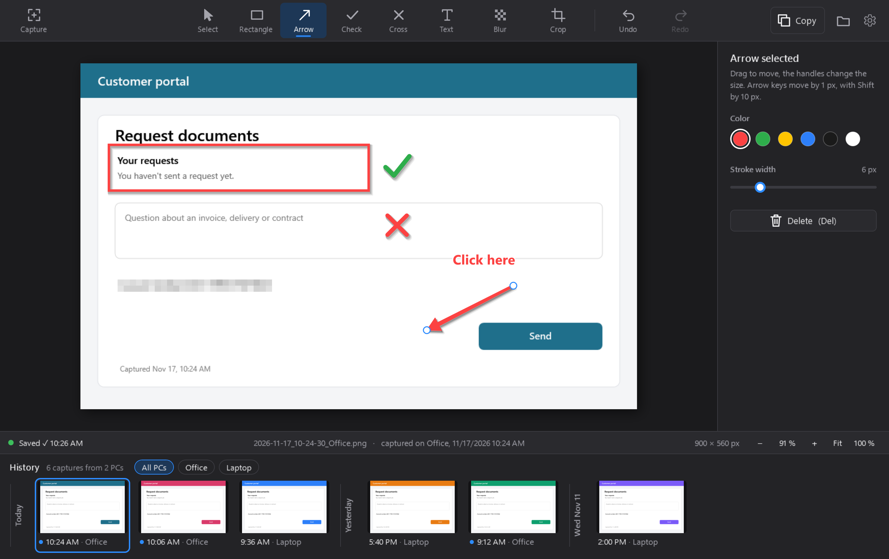
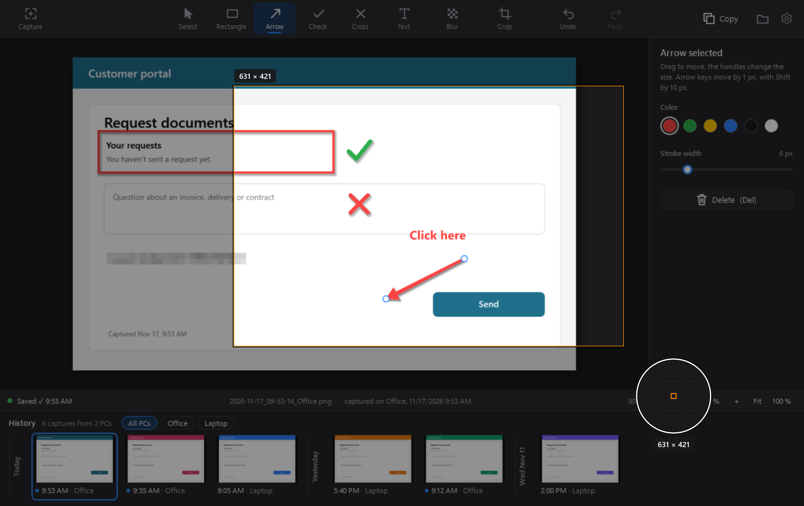
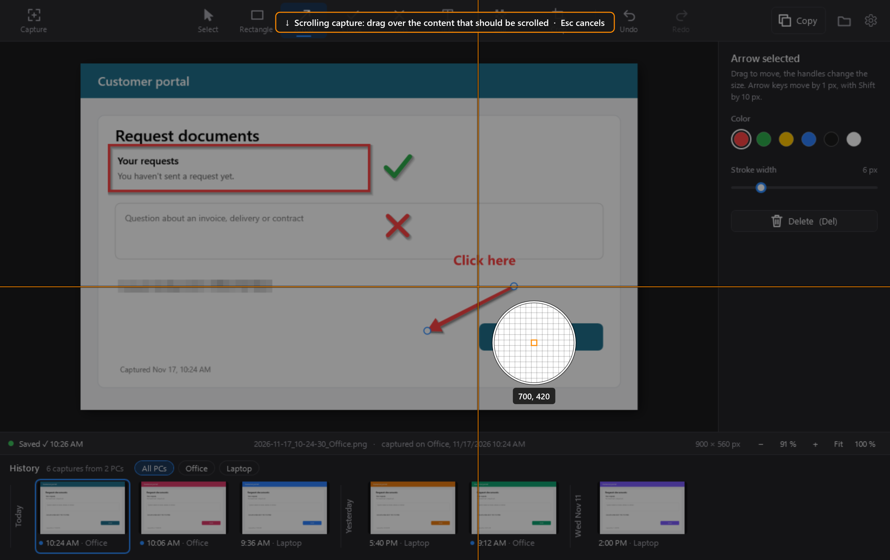
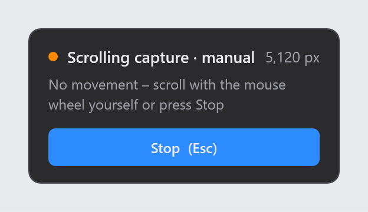
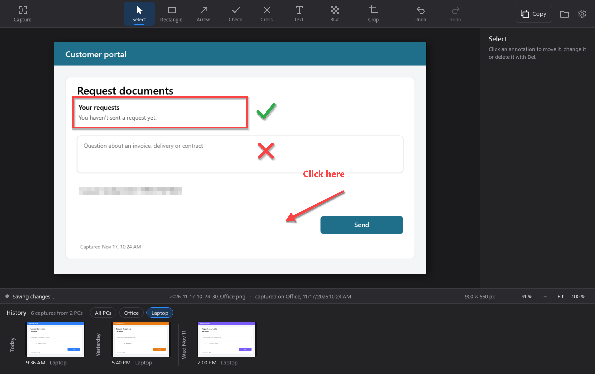

Show what matters.
Press PrtScn, drag an area, mark it up. The screenshot is already saved and on the clipboard.
- No account
- No subscription
- Open source (MIT)

Capture, mark, done.
There is no dialog, no save prompt and no upload. ShotMark waits in the notification area and is there the moment you press the key.
Press PrtScn
The screen freezes instantly – even tooltips and open menus stay in the picture. Any other shortcut works too.
Drag an area
A magnifier and the pixel size help you hit the exact edge, across all your monitors.
Mark it up
Frame, arrow, check, text – the editor opens with the capture ready to annotate.
Saved and on the clipboard before you even start marking.

Seven tools, each one key away.
Everything you need to point at something, nothing you have to learn. Each tool has its own key, and undo goes back a long way.
Rectangle
RA red frame around what matters. Hold Shift for a square.
Arrow
AFrom the start to the tip. Shift snaps to 45° steps.
Check
HA green check for “this is right”. Click to place, drag to size it.
Cross
XA red cross for “not like this”.
Text
TClick and type, with an outline that stays readable on any background.
Blur
UPixelate passwords, names and account numbers.
Crop
CTrim later without losing anything – the original is kept and the crop can be removed again.
Hide a password in one drag, copy the finished image with Ctrl C, and paste it wherever it needs to go.
More than a screenshot.
Scrolling capture
Long web pages, documents and lists in one image. ShotMark scrolls by itself, stitches the parts and stops at the end – or you scroll slowly yourself. Fixed headers appear only once.
Tooltips included
Point at an element until its tooltip appears, then press the shortcut. The screen freezes on the first key, before the program closes the tooltip.
Editable later
Every capture keeps its original and its marks separately. Open it from the history next week and move the arrow.


One shared folder for all your PCs.
Put the save folder in Dropbox, OneDrive or on a network drive, and every PC drops its captures there. The history shows what was captured when, on which PC – and filters by PC with one click.
Nothing gets overwritten
The PC name is part of every file name. If two PCs edit the same capture, ShotMark asks instead of overwriting – reload or save as a copy.
Plain files
Finished PNGs everyone can open, plus a hidden project file for later edits. No database, no lock-in.

Why ShotMark?
Looking for a free alternative to Snagit for everyday screenshots? ShotMark does the daily essentials – capture, mark up, pass it on – and leaves out everything else. It starts with Windows, waits quietly in the notification area and keeps itself up to date.
- Free, no subscription
- No account, no sign-in
- No telemetry
- Open source under the MIT license
- Updates itself in the background
- English and German, follows Windows
Download ShotMark.
Download for WindowsAlways the latest version · Windows 10 and 11, 64-bit · no admin rights · no .NET needed
Updates arrive on their own: ShotMark installs them when it doesn't interrupt you – or the next time it starts.